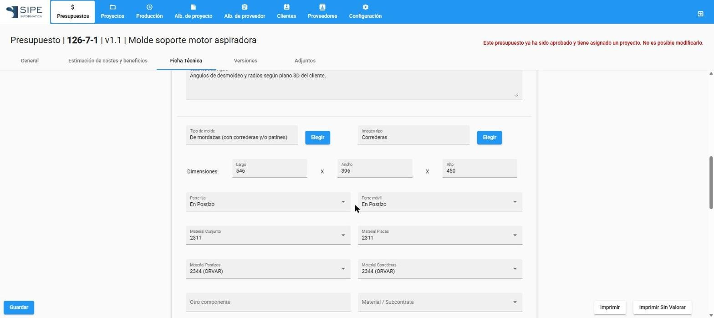

Rellenar la ficha técnica
La ficha técnica describe el trabajo y es el documento que recibe el cliente. Su contenido depende del tipo de trabajo: molde nuevo, reforma o trabajo parcial.

Completar la ficha
- Abre el presupuesto, entra en Ficha Técnica y elige la Plantilla (proyecto, reforma o parcial). Cada servicio tiene una plantilla por defecto.
- Si tienes planos o renders, pulsa Subir archivo para que aparezcan en la ficha.
- Rellena los datos técnicos. En un molde nuevo:
- Material a inyectar (termoplástico o metal), número de piezas distintas y si el cliente aporta fichero o maqueta.
- Material que se inyecta, acabado y observaciones de la figura.
- Tipo de molde e Imagen tipo (botón Elegir), dimensiones, parte fija y móvil.
- Materiales del conjunto, placas, postizos y correderas, y tratamiento de materiales.
- Tipo de entrada, sistemas de distribución y expulsión.
- Las piezas, con su complejidad, precisión y cantidad.
- Indica Fecha de entrega (30, 60, 90 días, a convenir o un número de días), Validez, Importe presupuestado y Forma Pago.
- Las Observaciones internas no salen en el documento del cliente.
- Pulsa Guardar.
Si cambias datos en la pestaña General
La ficha técnica repite algunos datos de la pestaña General: cliente, referencia, nombre, fecha, código, importe y observaciones. Si los cambias en General después de guardar la ficha, al volver a abrirla aparece la ventana Datos distintos entre General y Ficha técnica.
- Revisa la tabla: cada fila muestra el campo, su valor en la ficha (Ficha técnica (actual)) y su valor en General (General (nuevo)).
- Marca los campos que quieras pasar a la ficha. Ninguno viene marcado; la casilla de la cabecera los marca todos.
- Pulsa Aplicar seleccionados, o No actualizar para dejar la ficha como está.
- Pulsa Guardar para conservar los cambios en la ficha.
NotaLa validez y la forma de pago por defecto solo se proponen en una ficha nueva. Al abrir una ficha ya guardada se mantienen los valores que tenía.
Imprimir para el cliente
- Imprimir genera el PDF con el importe.
- Imprimir Sin Valorar genera el mismo documento sin precios, útil para validar la parte técnica con el cliente.
El PDF sale con el logo, los colores y los textos legales de tu empresa (Configuración › Informes).
NotaLos valores de las listas (acabados, tipos de molde, materiales, validez, formas de pago…) se mantienen en Configuración › Presupuestos.